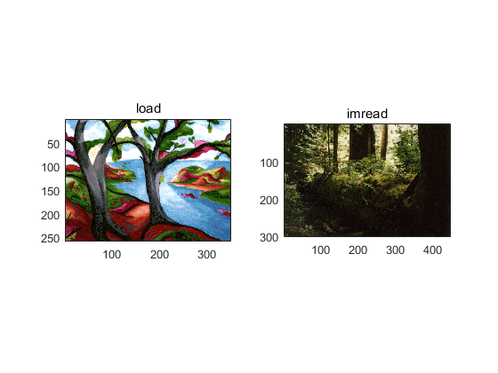

Matlab中对图像的简单操作
Contents
clc clear
1.读入图像文件并用 “whos”在命令窗口显示其图像内容
读入图像
I01=imread('cameraman.tif','tif'); I02=imread('ngc6543a.jpg','jpg');
用 “whos”在命令窗口显示其图像内容
whos
Name Size Bytes Class Attributes I01 256x256 65536 uint8 I02 650x600x3 1170000 uint8
2.获取 'ngc6543a.jpg'的图像信息
I02info=imfinfo('ngc6543a.jpg','jpg');
命令窗口查看图像信息
I02info
I02info =
Filename: 'D:\MATLAB\R2016a\toolbox\matlab\demos\ngc6543a.jpg'
FileModDate: '01-Oct-1996 16:19:44'
FileSize: 27387
Format: 'jpg'
FormatVersion: ''
Width: 600
Height: 650
BitDepth: 24
ColorType: 'truecolor'
FormatSignature: ''
NumberOfSamples: 3
CodingMethod: 'Huffman'
CodingProcess: 'Sequential'
Comment: {1x1 cell}
3.在4个窗口中分别显示4幅不同类型的图像
灰度图像
figure(1) imshow('cameraman.tif');title('灰度图像');
索引图像
figure(2) imshow('forest.tif');title('索引图像');
真彩色图像
figure(3) imshow('yellowlily.jpg');title('真彩色图像');
注意：Matlab R2016a版已经删除了判断图像类型的库函数，所以此处直接从图像属性中的位深度来大致判断，对于索引图像无法判断。

警告: 图像太大，无法在屏幕上显示；将以 33% 显示
二值图像
figure(4) imshow('circles.png');title('二值图像');
4.将多帧图像阵列mri.mat的所有帧图像以方阵形式显示在同一图像窗口
mri=uint8(zeros(128,128,1,27)); % *把每一帧读入内存中* for frame=1:27 [mri(:,:,:,frame),map]=imread('mri.tif',frame); end montage(mri,map);title('montage多帧图像显示');
警告: 图像太大，无法在屏幕上显示；将以 67% 显示
5.使用zoom和colorbar命令
figure(5) imshow('coins.png');title('使用zoom和colorbar命令'); zoom on colorbar('vert') colorbar('hotiz')
6.分别用imread和load命令显示两幅图像在同一个图像窗口
figure(6) load trees.mat subplot(121);subimage(X,map);title('load'); [X2,map2]=imread('forest.tif'); subplot(122);subimage(X2,map2);title('imread');
7.使用dither、gray2ind、grayslice、ind2gray、rgb2gray、rgb2ind、im2bw、ind2rgb、mat2gray编写9个函数
dither
figure(7);title('dither'); RGB=imread('autumn.tif'); subplot(2,2,1); subimage(RGB); load chess; subplot(2,2,2); subimage(X,map); Y=dither(RGB,map); subplot(2,2,3); subimage(Y,map);
gray2ind
figure(8); I=imread('pout.tif'); imshow(I);title('原图'); [X1,map1]=gray2ind(I,128); [X2,map2]=gray2ind(I,16); figure(9) imshow(X1,map1);title('gray2ind 128'); figure(10) imshow(X2,map2);title('gray2ind 16');
其余函数类似，直接调用即可。不懂时可查看Matlab的帮助